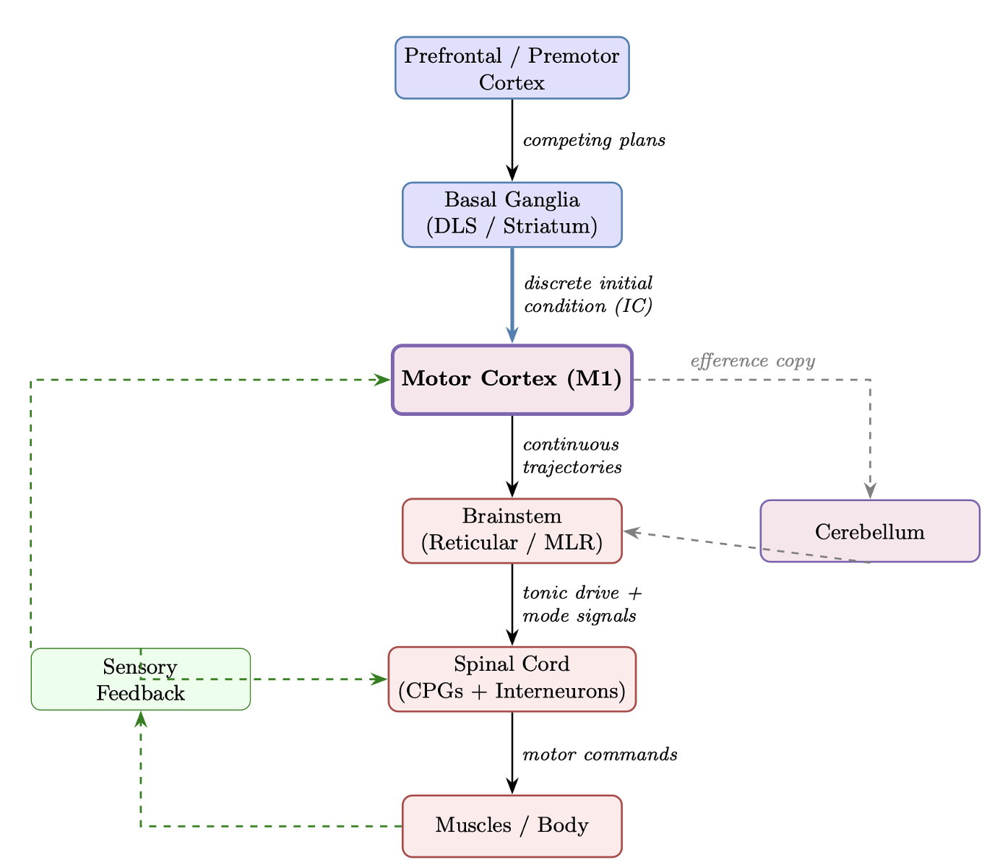

Motor neuroscience suggests that motor control is a piece-wise continuous function: premotor and basal ganglia circuits set the "initial condition" for a behavior, while primary motor cortex (M1) acts as a dynamical system that evolves according to its own dynamics. In the current computational landscape, reinforcement learning is widely used for lower-level motor control, and state-space models are used to segment behaviors at the higher level from keypoint data — but these two levels remain largely disconnected.
This project aims to close this loop by linking behavioral syllables directly to lower-level motor controls, bridging continuous naturalistic control with discrete semantic behavior understanding. Where switching linear dynamical systems (SLDS) have been used to model behavioral segmentation, we aim to build a Switching Non-linear Dynamical System (S-nLDS) that can capture the inherently non-linear, non-Gaussian dynamics of naturalistic behavior. Using observables from MIMIC-MJX physics simulation, we develop deep state space models that both understand the dynamics of behaviors and generate long biomechanically realistic sequences.

The hierarchical motor control pathway: prefrontal/premotor cortex generates competing plans, basal ganglia selects discrete initial conditions, and motor cortex (M1) evolves continuous trajectories through the brainstem and spinal cord to muscles.
This project builds on earlier work on dynamic modeling for biomechanical planning. See MimicDyn for the previous iteration that motivated this direction. This work is advised by professor Scott Linderman at Stanford University.